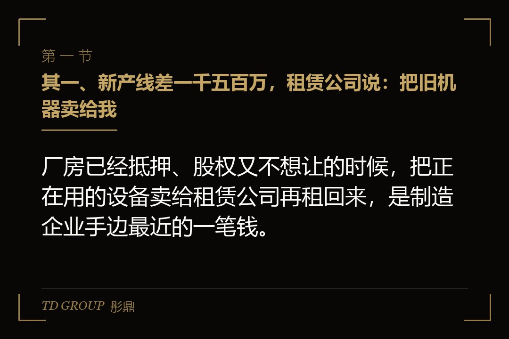
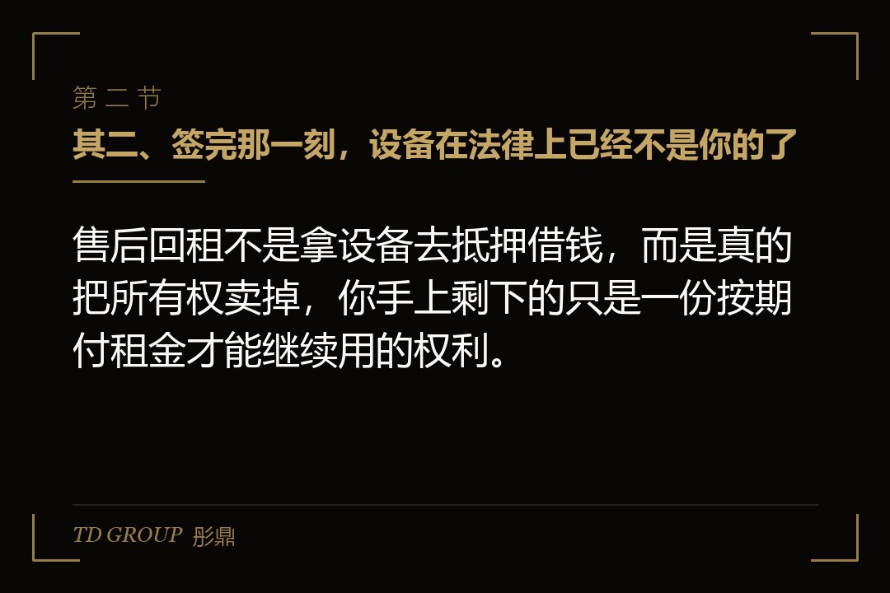
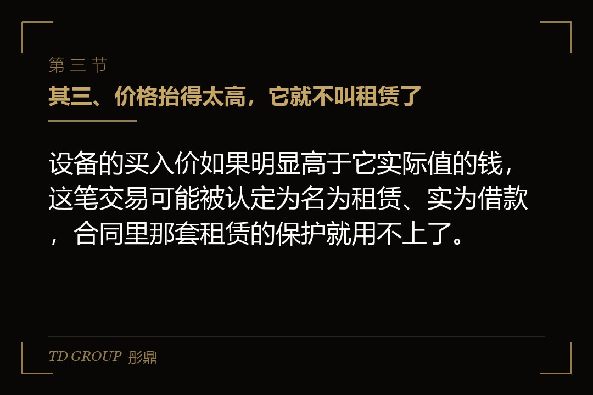

其一、新产线差一千五百万，租赁公司说：把旧机器卖给我

结论先行：厂房已经抵押、股权又不想让的时候，把正在用的设备卖给租赁公司再租回来，是制造企业手边最近的一笔钱。
假设有家做汽车零部件注塑和机加工的企业，年营收两亿出头，净利一千多万。车间里有一批三年前买的数控机床和注塑机，原值三千二百万，账面净值两千一百万左右。它刚拿到一个新车型的定点，要先上一条新产线，算下来还差一千五百万。
老板先去找银行。厂房早就押过一轮，额度用满了；设备可以再做抵押，但银行对二手机器打折打得很狠，批出来的数远不够。他又去见了两家投资人，对方给的估值他觉得太低，为了一条产线让出十几个点，他不愿意。
这时一家融资租赁公司上门，方案听上去很省事：把车间里这批设备卖给我们，我们一次付你一千五百万；设备不用搬，照常开工，你按季度付租金，三年付完，期满按一个象征性的价格把设备买回去。不用动股权，也不用再找抵押物。他签了。
先把边界划清楚。该借钱还是该卖股权、应收账款怎么换成现金、融资款到账后怎么管，各自都有专门的讨论，本文不展开。这里只讲一件事：这笔「卖了再租回来」的钱，代价具体落在哪几个地方。
其二、签完那一刻，设备在法律上已经不是你的了

结论先行：售后回租不是拿设备去抵押借钱，而是真的把所有权卖掉，你手上剩下的只是一份按期付租金才能继续用的权利。
民法典第七百三十五条对融资租赁合同的定义是：出租人根据承租人对出卖人、租赁物的选择，向出卖人购买租赁物，提供给承租人使用，承租人支付租金的合同。标准的融资租赁里有三方：设备厂商、租赁公司和用设备的企业。
售后回租把前两方合成了一方：卖设备的是你，租设备的也是你。这种安排算不算融资租赁，最高人民法院的融资租赁司法解释专门写过一条：承租人将其自有物出卖给出租人，再通过融资租赁合同将租赁物从出租人处租回的，不应仅以承租人和出卖人系同一人为由认定不构成融资租赁法律关系。
也就是说，它在法律上是成立的，而成立的前提是所有权真的转过去了。签约付款之后，那批机床的主人是租赁公司，你是承租人。机器还在你车间里转，每天的产量一分没少，但你对它能做的事已经变了。
民法典第七百五十三条规定，承租人未经出租人同意，将租赁物转让、抵押、质押、投资入股或者以其他方式处分的，出租人可以解除融资租赁合同。很多老板没意识到这一条：租赁期内想把其中几台卖掉换新的，或者拿去给另一笔贷款做担保，都要先问租赁公司同不同意。
其三、价格抬得太高，它就不叫租赁了

结论先行：设备的买入价如果明显高于它实际值的钱，这笔交易可能被认定为名为租赁、实为借款，合同里那套租赁的保护就用不上了。
回到开头那家企业。设备账面净值两千一百万，租赁公司付一千五百万，价格有依据，这是正常的售后回租。可现实中常见的是另一种谈法：企业缺三千万，租赁公司也想做这单，于是把同一批设备按三千万「买」下来。
监管对这件事有明确要求。原银保监会二〇二〇年发布的《融资租赁公司监督管理暂行办法》规定，适用于融资租赁交易的租赁物为固定资产，应当以权属清晰、真实存在且能够产生收益的租赁物为载体；在售后回租业务中，租赁公司对租赁物的买入价格应当有合理的、不违反会计准则的定价依据作为参考，不得低值高买。
司法解释里同样有对应的判断框架：法院应当结合标的物的性质、价值、租金的构成以及当事人的合同权利义务，来认定是否构成融资租赁法律关系。设备值一千万却按三千万交易，租金构成里几乎全是资金成本，这种合同在审判实践中常被认定为实际上是一笔借款，按借款关系处理。
更极端的是租赁物根本不存在，或者拿别家的设备、早已报废的设备充数。民法典第七百三十七条写得很直接：当事人以虚构租赁物方式订立的融资租赁合同无效。合同无效之后是返还与赔偿的问题，而那几份假的设备清单和发票，会在后面每一次尽调里被翻出来。
其四、设备上已经压着一层，就别想再用一次
结论先行：已经抵押给银行的设备不能再拿来做售后回租，而且自从统一登记实施之后，同一批设备被处置了几次，一查就能看到。
上面那份监管办法同时规定，租赁公司不得接受已设置抵押、权属存在争议、已被司法机关查封扣押或者所有权存在瑕疵的财产作为租赁物。原因很简单：设备一旦先押给了银行，租赁公司买到的就是一件带着别人担保权的东西。
假设那家企业两年前为了一笔流动资金贷款，已经把其中一部分注塑机抵押给银行。做回租时，财务图省事，把这几台和没抵押的混在同一张设备清单里交了上去。签约之前租赁公司去查登记，这几台当场被剔出来，额度砍掉三分之一，项目时间也耽误了一个月。
这里有个时间点值得记住。国务院《关于实施动产和权利担保统一登记的决定》自二〇二一年一月一日起施行，生产设备抵押、应收账款质押、融资租赁、保理等都纳入了人民银行征信中心的动产融资统一登记公示系统；机动车、船舶、航空器仍走各自的登记。
民法典第七百四十五条规定，出租人对租赁物享有的所有权，未经登记，不得对抗善意第三人。所以租赁公司签约后马上就会去登记。结果就是，同一批机器先押给银行、再做回租、再押给另一家，每一步都会留下一条公开可查的记录。
其五、租金断一季，出租人能要的不只是这一季
结论先行：售后回租的违约后果比贷款来得更快，租金拖欠经催告仍不支付，出租人可以主张剩余全部租金，也可以直接把设备收回去。
民法典第七百五十二条规定：承租人应当按照约定支付租金；承租人经催告后在合理期限内仍不支付租金的，出租人可以请求支付全部租金，也可以解除合同，收回租赁物。前一条路是把三年的租金一次算到眼前，后一条路是把机器从你车间里搬走。
对一家制造企业来说，后一条路比钱更要命。假设那家企业在第五个季度碰上主机厂压款，租金晚了两个月。租赁公司发出催告，还是没付上，对方通知解除合同、准备收回设备。车间停一天，给主机厂的交付就断一天，而定点合同里写着断供的违约责任。
有人会问，设备收走了，剩下的租金是不是就一笔勾销。民法典第七百五十八条对此有规定：约定期满设备归承租人所有、承租人已经支付大部分租金但无力支付剩余租金，出租人因此解除合同收回租赁物的，收回的设备价值超过欠付租金以及其他费用的，承租人可以请求相应返还。
问题在于「设备值多少」这件事，要到双方谈判甚至诉讼评估时才算得清，而那时候生产线已经停了。所以签合同时要把逾期多久算违约、催告给多长的宽限期、收回之前有没有协商程序这几处写清楚，别只盯着租金数字。
还有一处成本藏在放款那一刻：保证金和手续费通常从首笔款里直接扣掉，名义上拿到一千五百万，到账可能明显少于这个数，而租金是按一千五百万算的。把真正到手的钱、每期租金和期满留购价放在一起算一遍，才是这笔钱的实际资金成本。
其六、报表上它还是负债，尽调时会被一份份翻出来
结论先行：售后回租在会计上通常不算把设备卖掉了，设备仍留在账上，同时多出一笔负债，这一点会一路影响你下一轮融资的谈判。
老板签回租时常有一个误会：设备卖出去了，报表上应该是资产换成了现金，负债率不会变高。按现行企业会计准则的租赁准则，售后租回要先按收入准则判断资产转让是否属于销售；有回购安排、期满以象征性价格取回的，通常不属于销售。
不属于销售的结果是：卖方继续确认那批设备，同时确认一笔与转让收入等额的金融负债。换句话说，账上多了一千五百万现金，也多了一千五百万负债，和借了一笔三年期贷款在报表上几乎一样。
下一轮股权融资时，投资人会把这笔账翻出来。尽调清单上一定有这几项：全部融资租赁合同、租赁物清单、登记记录、租金支付台账、有没有逾期和展期。它在估值谈判里会被归进有息负债，从企业价值里扣掉，而不是当成经营性的应付款。
投资协议里也常有相应的约束。很多条款约定，公司新增一定金额以上的借款、担保或者融资租赁，需要投资人委派的董事同意。开头那家企业如果先拿了投资人的钱、再想做回租，就要先过这一关，时间表会被拉长。
走到申报上市那一步，中介还会看主要生产设备的权属。设备在租赁期内属于租赁公司，企业拥有的是使用权，这通常不构成障碍，但要解释清楚合同的稳定性、有没有被收回的风险，以及它对持续经营的影响。
其七、这条路什么时候该走，什么时候不该走
结论先行：售后回租适合拿来支撑一个回款时间确定、收益能覆盖租金的新项目，不适合用来填补一个还没找到原因的现金窟窿。
该走的情形有几个共同点：设备真实、权属干净、没有压过别的担保；拿到的钱投向一个有订单支撑的项目，回款节奏能对上每一期租金；算下来的实际资金成本低于这个项目的毛利空间。满足这几条，它确实是一条比稀释股权更划算的路。
不该走的情形同样清楚：拿去发工资或者还一笔到期贷款；设备早就抵押过、只是想换个地方再用一次；为了多拿钱把设备价格往上抬；或者企业已经在好几家机构同时做了回租，彼此并不知情。这几种情况里，它换不来时间，只会把问题推迟到更难收拾的时点。
还有一个经常被忽略的代价：设备和厂房、应收账款一样，是企业能拿去融资的有限资源。这批机器做了回租，就不能再拿去给银行授信做支撑。你是在提前用掉自己将来的一部分融资空间。
现在就能做的有这么几件：把全部设备清单和已有的抵押、租赁合同对一遍，列出哪些是干净的；签回租之前请审计师确认会计处理口径；把逾期定义、催告宽限期和收回程序谈进合同；给租金单独排一张现金流表，别和工资、材料款挤在同一个月。
我们跟华尔街俱乐部有合作，接触过不少靠设备回租撑过扩产期的制造企业。真正在下一轮融资里被卡住的，问题多半不在用了这个工具，而在于签的时候没人把它对报表、对后续融资空间的那一笔账算过。
最后留一个问题。假设你就是开头那家零部件企业的老板，新车型的定点已经拿到，产线差一千五百万：你是先做回租把钱拿到手，还是先接受投资人那个你嫌低的估值？如果是你，你会怎么选？